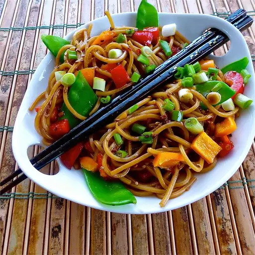

Cool pasta salad on a hot summer day is the perfect BBQ side dish.
It is always one of the first things to go.
Easy Asian Pasta Salad

Prep Time: 15 mins |
Cook Time: 10 mins |
Additional Time: 30mins |
|
Total Time:55mins |
Servings: 4 |
Yield: 4 Servings |
- 1 (8 ounce) package spaghetti
- 1 teaspoon olive oil
- 6 tablespoons soy sauce
- ¼ cup white sugar
- 3 tablespoons rice vinegar
- 1 tablespoon toasted sesame seeds
- 2 teaspoons sweet chili sauce
- 1 teaspoon sesame oil
- 2 green onions, chopped
- 1 red bell pepper, chopped (Optional)
- 1 cup sugar snap peas (Optional)
Step 1
Bring a large pot of lightly salted water to a boil. Cook spaghetti in the boiling water,
stirring occasionally until cooked through but firm to the bite, 10 to 12 minutes.
Drain and rinse under cold water. Transfer pasta to a serving bowl and toss with olive oil.
Step 2
Whisk soy sauce, sugar, vinegar, sesame seeds, chili sauce, and sesame oil together in a bowl until sugar dissolves.
Toss soy sauce mixture with pasta; top with green onions, red bell pepper, and snap peas.
Refrigerate 30 minutes to overnight to allow flavors to blend. Toss again before serving.
Nutrition Facts
per serving
| 340 | 5g | 64g | 11g |
| Calories | Fat | Carbs | Protein |